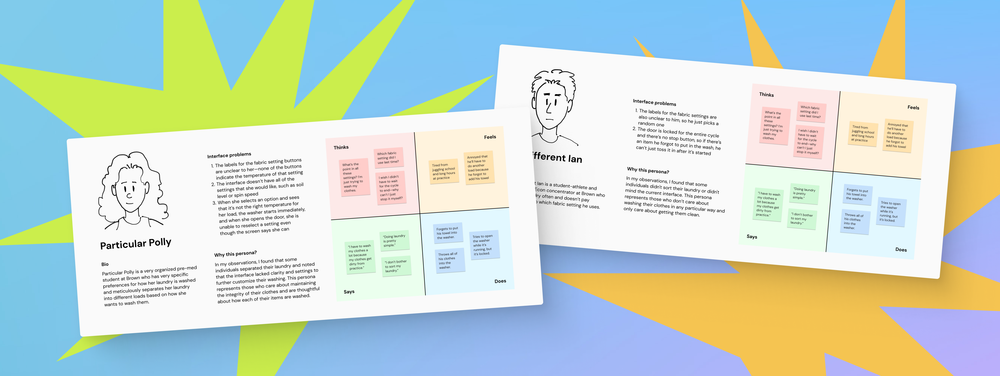
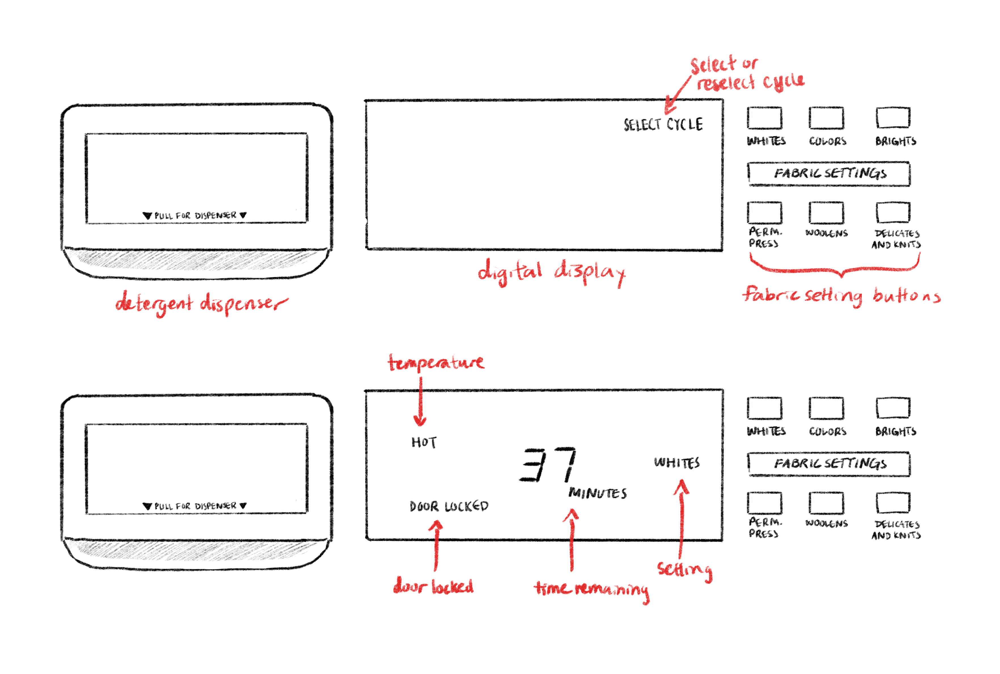
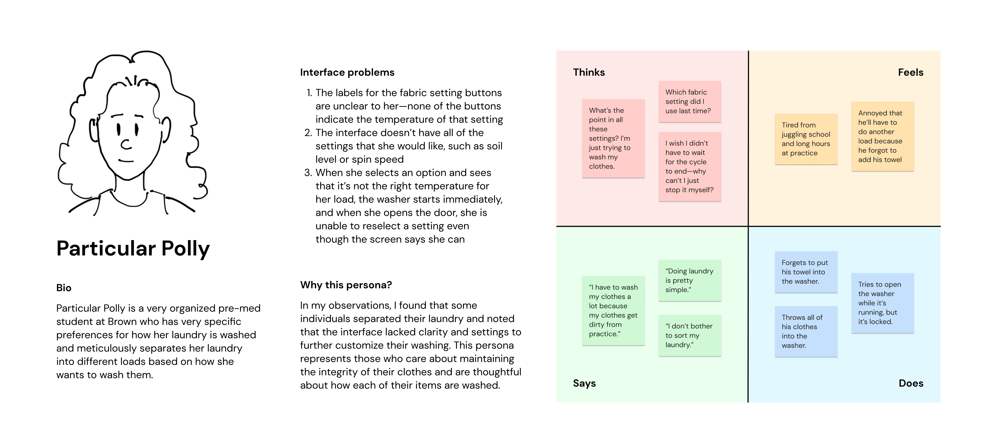
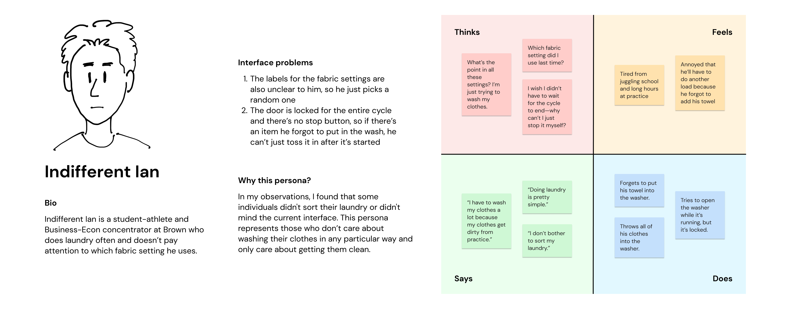
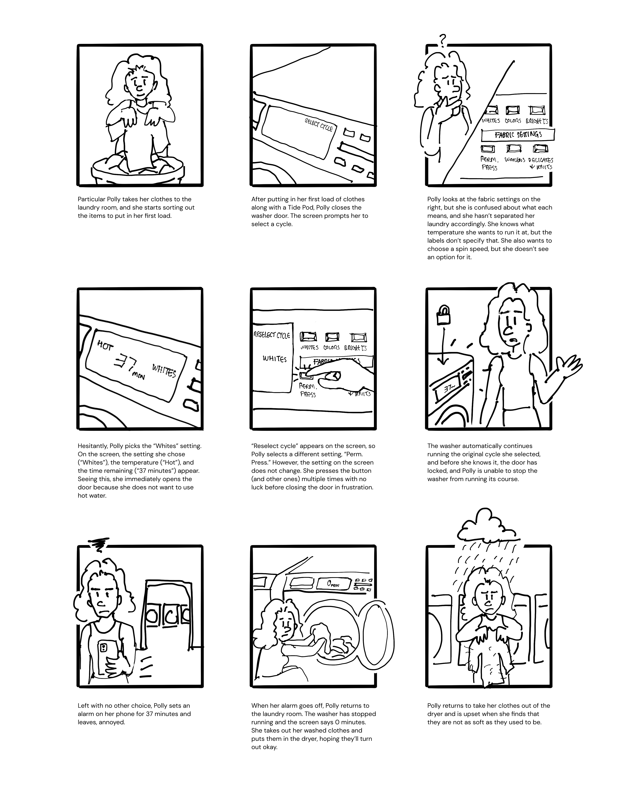

Investigating the users of a washing machine.
User Research • Personas • Storyboarding
TIMELINE
Sep 2022
2 weeks

Context
The goal of this project was to step into a user’s shoes. I observed 3 real users interacting with my choice of
a public interface (a Maytag washing machine), interviewed these individuals about their experiences, created 2
personas based on these users, and illustrated a storyboard for one of my personas.
Selecting an Interface
I decided to study my dorm's washing machine since I had struggled with using it myself and was curious to
see how other users interacted with it and hear their thoughts on it. Since the interface is in public view,
people also wouldn't be uncomfortable with being watched while using it. Below is a sketch of the main interface.

This interface uses a digital screen to display important information about your wash cycle, and with
preset fabric settings, it automates certain processes for its users, all of which makes it easier for
them to wash their clothes.
Users can select from a variety of fabric settings and view the status of the washing cycle while it’s
running. On the right, there are 6 buttons indicating the fabric settings from which users can choose,
and in the middle, there is a digital LED display that shows various details about the washing cycle,
including temperature, time remaining, the chosen fabric setting, and whether the door is locked. On
the left, there is also a drawer into which the user can pour detergent.
The top figure depicts the starting state of the screen, which prompts the user to “select cycle.”
The figure below it depicts the screen after the user selects a fabric setting, which they accomplish by
pressing one of the buttons. The door is unlocked for a brief period of time at the very beginning of
the cycle before the chamber is filled with water, after which the door is locked for the remainder of
the cycle. If the user opens the door before it is locked, the screen says “reselect cycle,” prompting
the user to select a different fabric setting.
Recording Observations
After selecting the interface, I prepared some interview questions for my users in order to gain insight
into their expectations, motives, and challenges regarding the interface. But before conducting these
interviews, I recorded my objective observations about their interactions with the interface, looking
out for any struggles or difficulties they might encounter while using it.
KEY OBSERVATIONS
- One user did not separate their laundry while the other two users did
- Users who separated their laundry chose different fabric settings for each load
- When the users selected the fabric setting, the “door locked” indicator appeared briefly before disappearing
- One user opened the door at this time, and “reselect cycle” appeared on the screen.
When they pressed a different button, the fabric setting displayed on the screen did not change
- When users pressed the fabric setting buttons, they did not visibly compress
- None of the users used the detergent dispenser; instead they used detergent pods that they threw into the washer
- After the washer started running, users set an alarm on their phone for the time remaining on the screen
- One user rounded up the time on their alarm to the nearest ten (37 → 40 min.)
Observing the users while they used the interface provided some insightful information about the interface's
mechanisms and its potential issues. It was also interesting to see how some users interacted with it differently
from others.
I was now ready to interview the users. Here's what I asked them:
INTERVIEW QUESTIONS
- What is going through your mind as you look at this interface?
- How does this compare to your expectations?
- Is there anything you would change/add/remove?
- Were you able to accomplish and find what you were looking for?
- If you wanted to change your fabric setting, what would you do?
- What, if anything, do you like or dislike about the interface?
- What adjectives would you use to describe this interface?
After jotting down answers from all three users, I took some time to find patterns in and
areas of contrast between their thoughts, motivations, and experiences. This helped me
summarize their responses into a few key points:
- Users generally found the interface pretty simple and intuitive to use, though somewhat outdated.
The screen displayed most of the important details they wanted to know, and it was easy for them
to see if the machine was occupied or not.
- Two users felt that the interface lacked certain options and functionalities that would allow them to
select their washing preferences more specifically to meet their needs.
- Users noted that they didn’t fully understand the difference between certain fabric settings
and wished for more clarity about the temperature of each setting.
- Users either didn’t know how to or were unsuccessful in reselecting their fabric setting.
- Users wished they could start and stop the cycle manually at any point.
Crafting the Personas
Based on the overarching trends taken from my observations and interviews,
I created two different personas, detailing their issues with the interface and things they think, feel say, or do using
a four-quadrant empathy map.


Storyboarding
The last part of this process was storyboarding, in which I mapped out one of my persona's journeys from start to end.
Though both personas represented valuable user groups, I decided to map out Particular Polly's journey as it seemed
to account for more of the problem space.

Conclusion & Learnings
Overall, this process was a super valuable learning experience. Putting yourself in someone else's shoes is tough, but it's totally necessary
in order to design for your users' needs. These methods were really helpful in identifying pain points in the interface's design as well as
discovering overarching patterns across users.